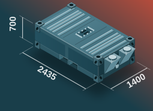
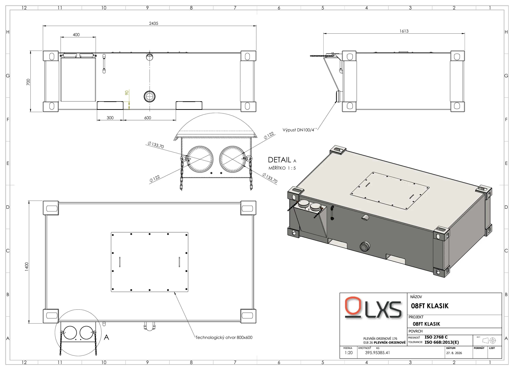

Mobilný oceľový septik · 08 FT
Parametre
| Dĺžka | 2435 mm |
|---|---|
| Šírka | 1400 mm |
| Výška | 700 mm |
| Hmotnosť | 400 kg |
| Manipulácia | vysokozdvižný vozík, kontajnerové rohy |
| Akosť zvarov | EN ISO 5817 C, vodotesné |
- Plniace kapsy s viečkom na reťiazke
- Revízny otvor v streche
- Vývod so zátkou a odvzdušnenie